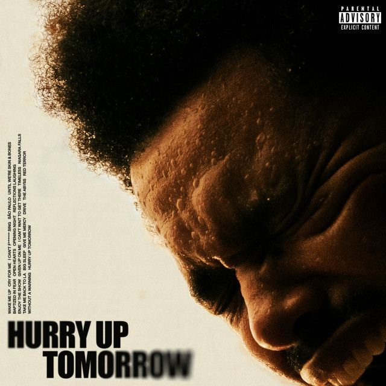

Trilogy (2012)

A remastered compilation of his groundbreaking mixtapes: *House of Balloons*, *Thursday*, and *Echoes of Silence*.
Trilogy introduced the world to The Weeknd’s haunting, atmospheric sound—a fusion of R&B, alternative, and electronic influences wrapped in themes of heartbreak, escapism, addiction, and emotional detachment. Initially released as a compilation of his critically acclaimed mixtapes—House of Balloons, Thursday, and Echoes of Silence—Trilogy marked The Weeknd’s official debut under a major label after signing with Republic Records in partnership with his own imprint, XO. While the original mixtapes were released online for free, Trilogy offered a more polished, remastered experience. It retained the raw vulnerability and ethereal production that had captivated his early fanbase, but added a professional sheen that made the project accessible to a wider audience. Notably, Trilogy wasn’t just a repackaging—it came with three brand-new bonus tracks: “Twenty Eight,” “Valerie,” and “Till Dawn (Here Comes the Sun).” These additions further expanded on the emotional themes found throughout the project, particularly exploring the consequences of fame, toxic love, and self-doubt.
Kiss Land (2013)

Cinematic and eerie exploration of fame, alienation, and the dark side of desire..
Released as The Weeknd’s first official studio album following the success of Trilogy, Kiss Land pushed his signature moody aesthetic into darker, more experimental territory. The album draws inspiration from horror films and Japanese culture, with sonic textures that are both lush and unsettling. It functions almost like a concept album, documenting Abel’s disorienting experience as he left Toronto and ventured into the world of international fame. The title Kiss Land itself represents an unfamiliar, almost dystopian place—a metaphor for the emotional detachment and surrealism that comes with life on the road, away from home, relationships, and reality. Songs like “Professional,” “The Town,” and “Belong to the World” are steeped in paranoia, lust, and longing, painting vivid pictures of isolation despite being constantly surrounded by people.
Beauty Behind the Madness (2015)

The album that catapulted The Weeknd to global stardom.
With this album, The Weeknd deliberately expanded his sound, incorporating more radio-friendly elements such as catchy hooks, upbeat tempos, and polished production. While his earlier work leaned heavily on atmospheric, slow-burning tracks drenched in melancholy and mystery, Beauty Behind the Madness introduced brighter instrumentals, tighter song structures, and collaborations with pop-heavy producers like Max Martin and Kanye West. Massive singles like “Can’t Feel My Face” exemplified this sonic shift—melding funk, disco-pop, and soul into a danceable hit that drew comparisons to Michael Jackson. Meanwhile, “The Hills” retained his signature dark themes of secrecy, lust, and emotional detachment, but paired them with booming bass drops and a dramatic chorus that made it just as impactful in a club setting as it was through headphones. This era didn’t just redefine The Weeknd’s sound—it reshaped his public image. During this time, he became instantly recognizable thanks to his signature “pineapple” haircut
Starboy (2016)

A futuristic, sleek evolution of The Weeknd's sound.
Starboy was both a sonic and visual transformation. Partnering with legendary French electronic duo Daft Punk, The Weeknd infused the album with shimmering synths, retro-futuristic textures, and infectious rhythms. The title track, “Starboy,” served as both a declaration of rebirth and a metaphor for his complicated relationship with fame—balancing gratitude, ego, and discomfort with being thrust into the spotlight. Its dark, pulsating beat paired with haunting vocals and Daft Punk’s signature robotic flair set the tone for the rest of the project. The album further showcased his versatility with tracks like “I Feel It Coming,” a smooth, disco-inflected duet with Daft Punk that paid homage to the sounds of the '80s while delivering a romantic, laid-back groove. This era was also defined by a major shift in The Weeknd’s image. He cut off his iconic “pineapple” hairstyle, symbolizing a clean break from his mysterious, underground past and embracing a new, sharper aesthetic.
My Dear Melancholy (2018)

A somber, stripped-down return to The Weeknd’s emotional and sonic roots.
Released as a surprise EP in March 2018, My Dear Melancholy, marked a return to The Weeknd’s emotionally vulnerable roots. Unlike the flashy, upbeat energy of Starboy, this project leaned into sorrow and reflection, channeling the spirit of his early Trilogy era. With only six tracks, the EP feels intimate and haunting—fueled by feelings of loss, regret, and unresolved love, reportedly inspired by his relationships with Selena Gomez and Bella Hadid. Tracks like “Call Out My Name” and “Wasted Times” explore emotional vulnerability with cinematic soundscapes and aching vocals, while “Hurt You” and “I Was Never There” (produced by Gesaffelstein) infuse electronic minimalism with emotional detachment. The production remains subtle yet haunting, emphasizing space and melancholy over radio polish.
After Hours (2020)

An emotional deep-dive filled with pain, self-reflection, and synth-pop brilliance.
After Hours marked one of The Weeknd’s most ambitious and cohesive projects to date—both sonically and visually. Released in March 2020, the album blended elements of 1980s synth-pop, darkwave, R&B, and trap into a cinematic experience that explored the emotional aftermath of love lost, personal reckoning, and existential crisis. It wasn’t just an album—it was a carefully crafted narrative, complete with eerie visuals, bloodied red suits, and chaotic late-night escapades that blurred the line between fame and madness. Sonically, After Hours was a masterclass in nostalgia fused with innovation. The biggest hit, “Blinding Lights,” became a cultural phenomenon with its upbeat synths and infectious rhythm—evoking the high-energy feel of '80s pop while contrasting sharply with the loneliness and longing expressed in the lyrics.
Dawn FM (2022)

A concept album narrated by a fictional radio DJ, guiding listeners through purgatory.
Dawn FM marked another bold creative leap for The Weeknd—both sonically and thematically. Released in January 2022, the album is built around the concept of a fictional radio station broadcasting from purgatory, with legendary actor Jim Carrey serving as the smooth-talking DJ guiding listeners through a liminal space between life and death. Through this concept, The Weeknd explores themes of mortality, regret, healing, and spiritual transcendence, all wrapped in shimmering ‘80s synth-pop, new wave, and electronic textures. yrically, Abel moves away from the hedonistic themes of past albums and instead looks inward. He contemplates lost time, personal flaws, and what lies beyond the physical world. Songs like “Gasoline” and “How Do I Make You Love Me?” are both catchy and deeply existential, delving into self-destruction and the longing to be seen beyond the fame and the persona.
Hurry up Tomorrow (2025)
A genre-defying journey through time, memory, and the collapse of reality.
Hurry Up Tomorrow is not just an album—it’s a final farewell. A sonic and spiritual unraveling of The Weeknd, this project marks the end of an era and the emergence of Abel Tesfaye in his rawest, most human form. Built around themes of release, self-reckoning, and personal resurrection, the album feels like both a funeral and a rebirth—shedding the mask he wore for over a decade and stepping fully into his own identity. Visually, Hurry Up Tomorrow abandons the stylized drama of previous eras. The Weeknd's iconic red suits, bandages, and surreal worlds are gone. In their place, we see Abel in natural light, stripped down, vulnerable, and real. The promotional art and videos reflect this transition—bleached-out colors, quiet environments, and imagery of rebirth: fire, water, and open skies. It’s not about spectacle—it’s about surrender.